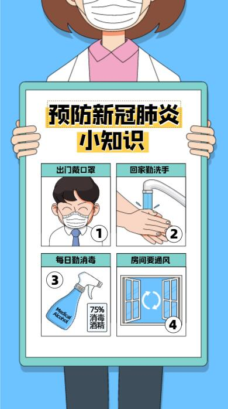

预防方法
到底应该如何预防感染冠状病毒，北京市疾控中心建议要加强个人防护，避免接触野生禽畜，杜绝带病上班、聚会。从武汉等地外出旅行归来，如出现发热咳嗽等呼吸道感染症状，应根据病情就近选择医院发热门诊就医，并戴上口罩就诊，同时告知医生类似病人或动物接触史、旅行史等。具体建议如下：
一、加强个人防护
1.避免前往人群密集的公共场所。避免接触发热呼吸道感染病人，如需接触时要佩戴口罩。
2.勤洗手。尤其在手被呼吸道分泌物污染时、触摸过公共设施后、照顾发热呼吸道感染或呕吐腹泻病人后、探访医院后、处理被污染的物品以及接触动物、动物饲料或动物粪便后。
3.不要随地吐痰。打喷嚏或咳嗽时用纸巾或袖肘遮住口、鼻。
4.加强锻炼，规律作息，保持室内空气流通。

二、避免接触野生禽畜
1.避免接触禽畜、野生动物及其排泄物和分泌物，避免购买活禽和野生动物。
2.避免前往动物农场和屠宰场、活禽动物交易市场或摊位、野生动物栖息地或等场所。必须前往时要做好防护，尤其是职业暴露人群。
3.避免食用野生动物。不要食用已经患病的动物及其制品；要从正规渠道购买冰鲜禽肉，食用禽肉蛋奶时要充分煮熟，处理生鲜制品时，器具要生熟分开并及时清洗，避免交叉污染。
三、杜绝带病上班、聚会
如有发烧、咳嗽等呼吸道感染的症状，居家休息，减少外出和旅行，天气良好时居室多通风，接触他人请佩戴口罩。要避免带病上班、上课及聚会。
四、及时就医
从武汉等地外出旅行归来，如出现发热咳嗽等呼吸道感染症状，应根据病情就近选择医院发热门诊就医，并戴上口罩就诊，同时告知医生类似病人或动物接触史、旅行史等。 [43]
|